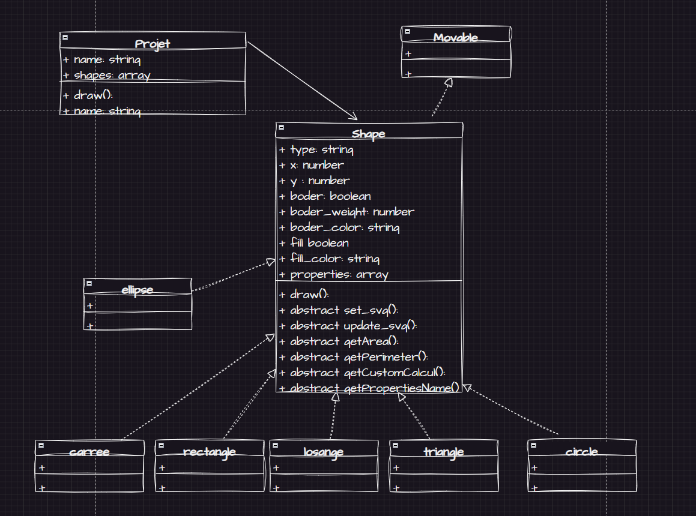
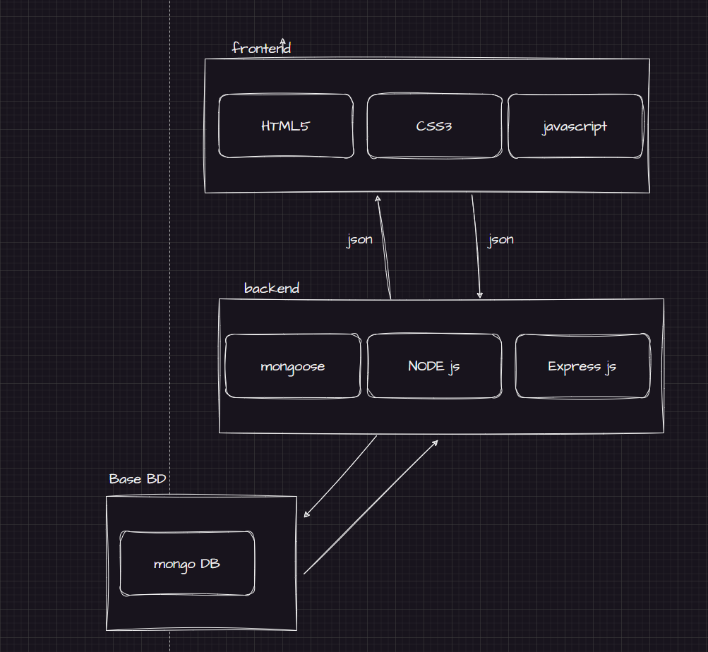

Reponces
Question 1
- J'utilise Javascript comme plateforme de programmation oriente objet
- J'utilise VS code comme IDE
Question 2 : fonctionalites
Creation de formes
- creer des carres , rectangles , losanges, cercle,hexagone et ellipse
- modifier les proprietes de forme : couleur ,point d'origine . . .
Edition de formes
- selectonner une forme
- L'agrandir et le retressir
- Deplacer une forme
- modifier les proprietes de forme : couleur ,point d'origine . . .
Visualisation de formes
Caculs geometriques
- Calcul automatique des proprietes clees des formes tel que l'air et le perimetre
Stockage de donnees
- Sauvegader son travail
- charger son travail
Interface conviviale
Question 3 : conception
Interface
- Une page principal pour administrer des projets de dessin
- Une page pour dessiner dans un projet
Structure du code
classes

architecture

Question 5
IDE
l'IDE utilisee est VS CODE , une IDE puissante et developpe par microsoft
,compatible avec une multitude de language de programmation . Il est hautement personnalisable
et offre gratuitement une mutitude de gadget
BD
la base de donnees utilise est mongo db , une base de donnees NOSQl , parfait
pour des projets qui doivent evoluer dans des milieux dynamique car il est souple et permet de facilement
modifier la structure de donnees.